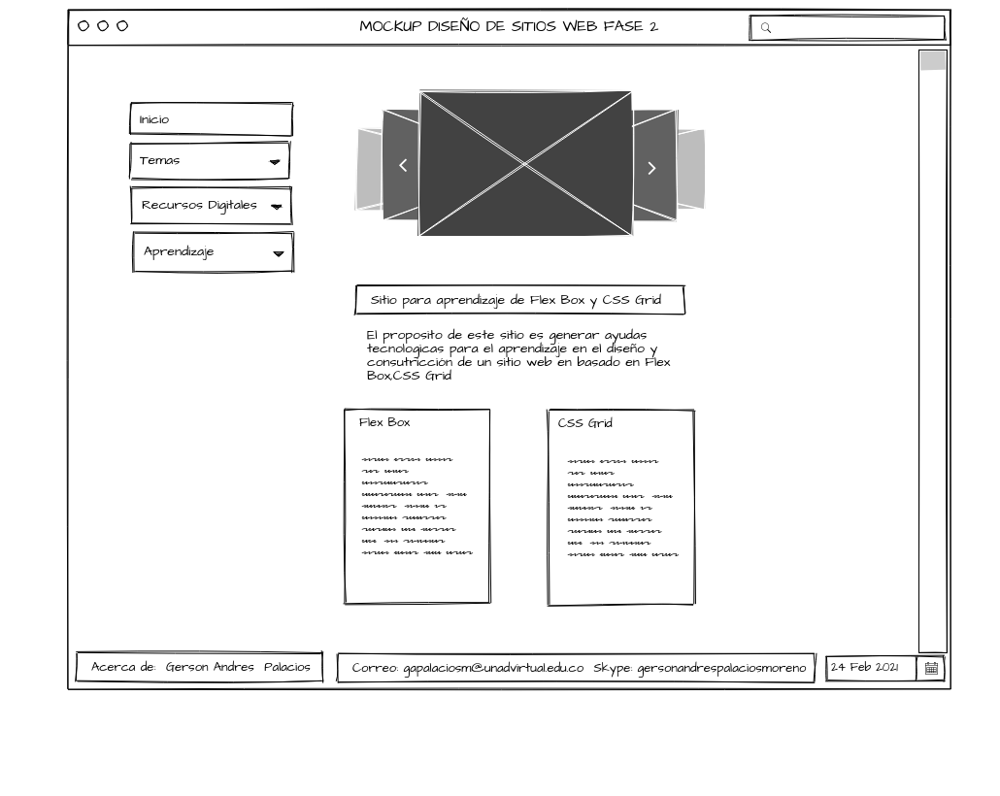

Flex Box
El Flex Box permite colocar elementos en una distribución elaborada y adaptable permitiendo que dentro de un
contenedor se organicen automáticamente dependiendo del tamaño de la pantalla o del dispositivo.
El elemento padre que sostiene todos los elementos flex a través de dos ejes se le conoce como Flex
Containery cualquier elemento hijo directo que se mantenga directo del contenedor flex se considera un Flex Ítem.
El uso de cajas flexibles es muy intuitivo ya que solo necesitamos definir un contenedor padre como la caja
flexible y todos los elementos que se incluyan en ella serán hijos y adoptaran su comportamiento.
• Aubry, C. (2014). HTML5 y CSS3: para sitios con diseño web responsive. Ediciones ENI. Recuperado de
https://books.google.es/books?hl=es&lr=lang_es&id=ys5PaRPiEwwC&oi=fnd&pg=PA9&dq=Aubry,+C.+(2014).+HTML5+y+CSS3:
+para+sitios+con+dise%C3%B1o+web+responsive.+Ediciones+ENI.&ots=oADVOjbs7R&sig=KrnfQec2kdUHjhUnMyVz275-0TU#v=onepage&q
=Aubry%2C%20C.%20(2014).%20HTML5%20y%20CSS3%3A%20para%20sitios%20con%20dise%C3%B1o%20web%20responsive.%20Ediciones%20ENI.&f=false
• Castro González, J. (2020). Aplicación Web para la evaluación y planificación de menús escolares.
Recuperado de
https://riull.ull.es/xmlui/bitstream/handle/915/21328/Aplicacion%20Web%20para%20la%20evaluacion%20y%20planificacion%20de%20menus%20escolares.pdf?sequence=1
CSS Grid
CSS Grid System es una estructura (framework) para crear sitios web con un diseño basado en columnas.
El sistema utiliza una combinación de 12 o 16 columnas para obtener un marco de 960 pixeles en total
permitiendo una adaptación a la mayoría de las pantallas existentes que tienen una resolución de al
menos 1024 x 768 pixeles.
La esencia del sistema es que todas las columnas tengan anchos específicos y constantes.
Si se utiliza el diseño a 12 columnas, deben tener un ancho de 60 pixeles y si se utilizan 16 columnas,
el ancho debe ser de 40 pixeles.
Cada una de las columnas se separa de las demás con un margen de 10 pixeles a cada lado.
Este sistema se constituye en una guía para el diseño rápido de sitios web, pues se eliminan procesos
repetitivos de diagramación.
Además, es posible hacer gran cantidad de combinaciones entre las columnas para disponer
los contenidos de los sitios web.
Entre las características más importantes tenemos:
•Diseño basado en retícula utilizando columnas de tamaño fijo estableciendo una retícula que sirva de base
en la creación de los sitios web.
•Administración independiente de las tipografías utilizadas en el diseño del sitio web, mediante un archivo externo llamado text.css
•Tipografía definida en pixeles que permite definir el tamaño de las tipografías, facilitando su diseño.
•Estructura básica sin diseño ya que no incorpora previamente elementos de diseño como colores de fondo o texto.
Ventajas:
•Compatibilidad con la mayoría de los navegadores más utilizados como el Mozilla Firefox, Google Chrome, Safari, Internet Explorer y Opera.
•Estructura previa para la diagramación de los sitios web, pues evita el proceso de creación de una nueva estructura cada vez que se inicia un proyecto
•Experiencia visual ya que nos ofrece una retícula que mejora el balance, la alineación y el espacio para lograr una mejor experiencia visual
•Aumenta la velocidad de desarrollo agilizando los procesos de creación de sitios web
Desventajas:
•Presenta una estructura rígida para la diagramación de los sitios web que no permite variantes para lograr otras formas de mostrar el contenido
•Lo anterior genera una limitación en la creatividad en el diseño y la diagramación de sitios web
•El sistema funciona muy bien con resoluciones de hasta 1024 pixeles, pero con el desarrollo acelerado de la tecnología cada vez las pantallas permiten
mayores resoluciones y el sistema no se adapta satisfactoriamente a resoluciones superiores.
•Difícil implementación ya que debe ser usado por expertos con conocimientos de HTML y CSS.
• Sánchez, M. (2015). 960 Grid System Recuperado de
https://observatoriotecedu.uned.ac.cr/media/960_grid.pdf
DISEÑO DE MOCKUP FASE 2
